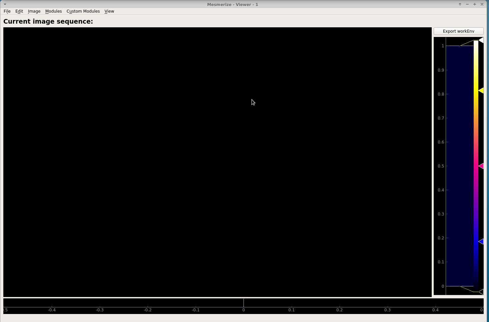

Viewer overview¶
Based on the pyqtgraph ImageView widget.
The Viewer allows you to do the following things:
- Examine your calcium movies
- Use modules to perform things like motion correction, CNMF(E), ROI labeling, and stimulus mapping. See their respective guides for details.
- You can also make modifications to an existing Sample in your project by opening it in the Viewer. See Modify Sample and Overwrite guide.
Viewer layout¶
To access Viewer modules choose the module you want to run from the Modules menu at the top. All modules, except the Batch Manager, are small floating windows which you can dock into the Viewer by dragging them to an edge of the viewer.
Opening Images¶
You can open tiff files and mes files in the Viewer. To open a tiff file go to Modules -> Load Images -> Tiff files.
Note
You can also use this module through the console and scripts. See Tiff Module
To open tiff files just click the “Select file” button and choose your file.

When you choose a tiff file it will automatically find the associated .json meta data if it has the same filename.
Warning
If the name of the tiff file and .json meta data file are different, you must specify the .json meta data file using the Select meta data button.
Warning
You cannot perform any analysis without the meta data file since you need the sampling rate of the video and it is specified in the meta data file.
Load Method¶
The options for “Load Method” correspond to the tifffile library method that is used for loading the images.
- asarray: Should work for most tiff files, fast method
- asarray - multi series: Also fast. Use this if it is a multi-page tiff. For example if the tiff file was created by a program that appends each frame to a file as they are being acquired by the camera.
- imread: Usually slower, should work for most tiff files.
If you are not sure which method you should use, try all of them and see which one loads your data appropriately. If none of them work, contact us and I may be able to add more methods.
Click the “Load into workEnv” button to load this image into your work environment.
Note
If you have an unsaved work environment open (such as a video with ROIs for example) it will prompt you to confirm that you want to clear the work environment before loading the chosen image into the work environment.
Exploring the work environment¶
You can explore everything, such as meta data, in your work environment by going to View - > Work Environment Editor..
Note
This is read only, you cannot edit via this GUI.
For example if you want to see your meta data, double click on “imgdata” and then you can see that “imgdata” has two things, the image sequence (i.e. your video) and the meta data.
If you double click on “meta” above you can see your meta data.
You can view your meta data more quickly using the console.
Open the console by going to View -> Console.
You can then call get_meta() to print the meta data dict.
Running scripts¶
You can run scripts in the Viewer console to automate tasks such as batch creation. See the scripting guides <ref here> for more detail.